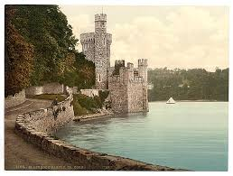
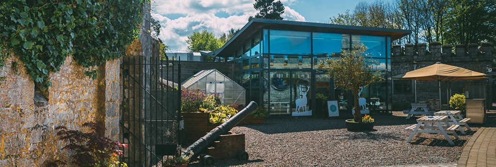

Although formal records do not begin until about the middle of the 16th century, there are indications that a fortification of one type or another has stood on the tiny promontory jutting out into Cork Harbour since Anglo-Norman times. In the late 16th century, the citizens of Cork appealed to Queen Elizabeth I to construct a fort at Blackrock to "repel pirates and other invaders". Blackrock Castle was originally built on the Lee in 1582 by the citizens of Cork as a watch tower and fort to guard the river entrance against pirates and other invaders. In 1600 a round tower was constructed by the Elizabethan government at the request of the citizens of Cork to protect them from marauding pirates and other invaders. Following a charter by James I in 1608, Blackrock Castle was handed over to the City of Cork. In 1722 the old four-storey tower was destroyed by fire and new one was rebuilt with an octagonal room topped with a cupola. Throughout this period, the castle was used by Cork Corporation for banquets and "convivial gatherings" - some associated with the custom of "throwing the dart". This custom, dating to at least the 18th century, was held every three years in August, and involved a dart (an arrow about four feet long) being thrown by the Mayor from a boat, to indicate the Corporation's jurisdiction over the harbour. On a freezing night in 1827, the iconic Blackrock Castle went up in smoke. PAT POLAND recalls the inferno, and the 190th anniversary of its grand reopening Old Blackrock Castle, with majestic height Salutes by day, and guides our boat by night. SO wrote local poet and lawyer Henry Bennett, alluding to the lantern on the castle that served as a beacon of comfort to the fishermen abroad on Lough Mahon in the darkness of night. Shortly after he penned those lines, however, it wasn't the beam from the lighthouse that lit up the surrounding area, but the castle itself. For early on the morning of Tuesday, February 27, 1827, Blackrock Castle burned to the ground in a spectacular blaze. The rebuilding began at the direction of Mayor Thomas Dunscombe in 1828 and was completed in March 1829. The architects added three additional storeys to the original tower and rebuilt the out-buildings. The new building cost the City of Cork £1,000. The architects were George Richard Pain and James Pain, who were responsible for other public buildings around Cork at the time. The neo-gothic complex of buildings around a courtyard is essentially what remains today. The present castle consists of a large circular tower with crenellated parapets resting on large corbels. It incorporates portions of the walls of the second castle which were strong enough to withstand the impact of cannon balls. On its eastern side it is joined to a cylindrical tower rising several feet above the main structure. At the side of this tower is a watergate leading to a slipway. Blackrock Castle was used by Cork Corporation for civic functions during the nineteenth century. The castle was in private hands for many years but is now restored and used as an observatory, operated by staff from the Cork Institute of Technology, it is open to the public and has a restaurant onsite.
In the early-2000s, Blackrock Castle was redeveloped under a joint venture between Cork City Council, Cork Institute of Technology and a private benefactor as a science center and observatory. The center features interactive exhibits exploring topics such as space, astronomy, and marine biology. The castle's tower now houses a state-of-the-art observatory, which offers visitors the chance to stargaze and learn about the wonders of the universe. One of the most popular attractions at Blackrock Castle is thethe "Cosmos at the Castle". This project was intended to create a "centre for scientific research, outreach and communication". This immersive show takes visitors on a journey through space and time, exploring the history of the universe and our place in it. The show features stunning visuals and is a must-see for anyone interested in astronomy. The castle's observatory houses an interactive astronomy center which is open to the public, and has exhibits including a "tour of the universe" and a radio telescope that beams messages composed by school groups towards nearby stars. The castle also houses labs staffed by astronomical researchers from Cork Institute of Technology.
Blackrock Castle ObservatoryIn addition to its science center and observatory, Blackrock Castle is also home of "The Castle Cafe" which opened its doors in 2007 and is a family friendly café with over 500 reviews on Trip Advisor. Visitors can enjoy a meal while taking in the castle's stunning views of the River Lee.
 Castle Cafe